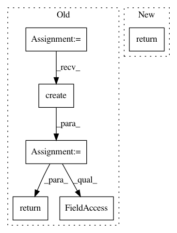

2e4134c8317d51ac4e5d848ca51bf9787abffcfb,app/api/views.py,AutoLabelingConfigTest,pass_pipeline_call,#AutoLabelingConfigTest#Any#,556
Before Change
def pass_pipeline_call(self, serializer):
test_input = self.request.data["input"]
project = get_object_or_404(Project, pk=self.kwargs["project_id"])
task = TaskFactory.create(project.project_type)
model = RequestModelFactory.create(
model_name=serializer.data.get("model_name"),
attributes=serializer.data.get("model_attrs")
)
template = MappingTemplate(
label_collection=task.label_collection,
template=serializer.data.get("template")
)
post_processor = PostProcessor(serializer.data.get("label_mapping"))
labels = pipeline(
text=test_input,
request_model=model,
mapping_template=template,
post_processing=post_processor
)
return labels
class AutoLabelingAnnotation(generics.CreateAPIView):
pagination_class = None
After Change
def pass_pipeline_call(self, serializer):
test_input = self.request.data["input"]
project = get_object_or_404(Project, pk=self.kwargs["project_id"])
return execute_pipeline(
text=test_input,
project_type=project.project_type,
model_name=serializer.data.get("model_name"),
model_attrs=serializer.data.get("model_attrs"),
template=serializer.data.get("template"),
label_mapping=serializer.data.get("label_mapping")
)
class AutoLabelingAnnotation(generics.CreateAPIView):
pagination_class = None
In pattern: SUPERPATTERN
Frequency: 4
Non-data size: 6
Instances
Project Name: chakki-works/doccano
Commit Name: 2e4134c8317d51ac4e5d848ca51bf9787abffcfb
Time: 2021-02-16
Author: light.tree.1.13@gmail.com
File Name: app/api/views.py
Class Name: AutoLabelingConfigTest
Method Name: pass_pipeline_call
Project Name: biocore/scikit-bio
Commit Name: 37177ecd552cc8cc30586a1a041eddcc4b2a9841
Time: 2016-06-24
Author: ebolyen@gmail.com
File Name: skbio/util/_decorator.py
Class Name: classonlymethod
Method Name: __get__
Project Name: chakki-works/doccano
Commit Name: 2e4134c8317d51ac4e5d848ca51bf9787abffcfb
Time: 2021-02-16
Author: light.tree.1.13@gmail.com
File Name: app/api/views.py
Class Name: AutoLabelingAnnotation
Method Name: extract
Project Name: biocore/scikit-bio
Commit Name: 5da3b4a48dcc59e65d3b7c99bd9b4d284bef1ed5
Time: 2016-07-21
Author: ebolyen@gmail.com
File Name: skbio/util/_decorator.py
Class Name: classonlymethod
Method Name: __get__